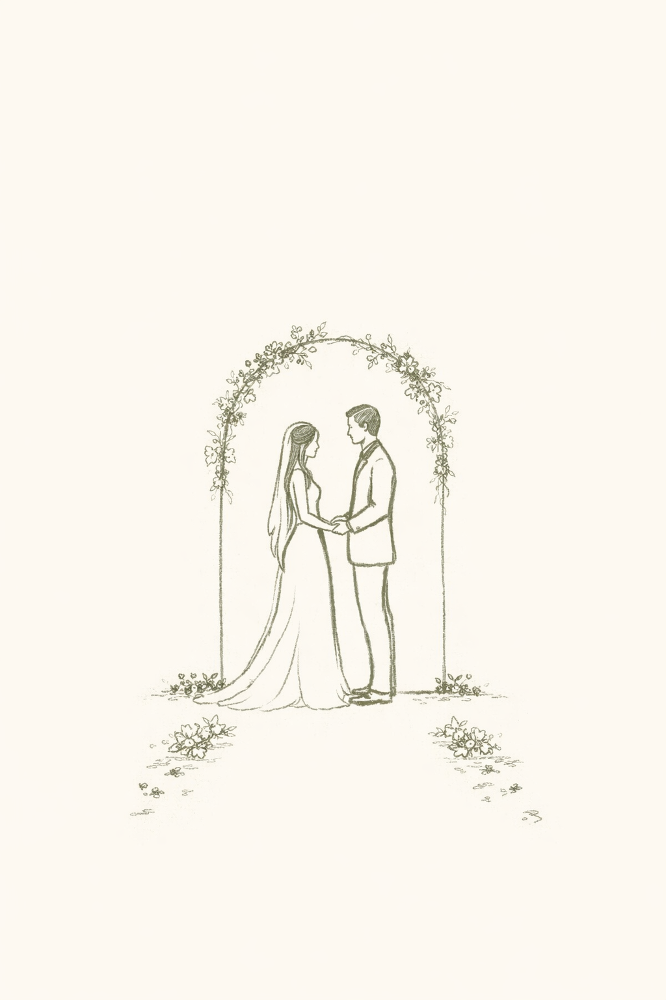

A cerimónia terá início às 15h30.
A receção terá lugar a partir das 17h00.
A cerimónia e a celebração terão lugar na Quinta da Luz, em Sintra.

A cerimónia e a celebração decorrem no mesmo espaço, o que facilita a logística dos convidados.
O local dispõe de estacionamento e acessos simples.
Como parte do evento poderá decorrer no exterior, recomenda-se um vestuário confortável e adequado à estação.
Estas indicações podem ser alteradas conforme o estilo e o tipo de evento de cada cliente.
Para maior comodidade, sugerimos o planeamento antecipado do transporte de ida e regresso.
Em versões finais para clientes, esta secção pode incluir recomendações sobre táxis, transfers, estacionamento ou alojamento.